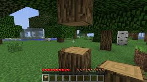

The Essentails
1.To get started, you will have nothing, so punch a tree until it drops
wood then keep destroying the tree until there is no more wood. A few blocks
of wood should apear in you inventory.
2.Now go into your inventory, place the wood in your crafting slot,
it should come out as another type of wood. Now with the new type of wood,
(this is called planks) fill in all the posible crafting slots. It should
come out as a crafting table.
3.Next, craft a stick by placing one plank on the bottom of the
crafting table and one in the middle. It should result in sticks. Then,
make a picaxe by placing 1 stick on the bottom of the crafting table
and one on the middle. Then, fill the top collum with wood planks.
4.Now, it should be night pretty soon. Your home doesn't have
to be complecated. Find a small hill not too far away from your spawn
point and with your picaxe, break a 4 x 4 x 2. Place your crafting table
in the crafting table inside. With your wood picaxe, break 8 pieces of
stone. Put them in every slot of the crafting table execpt for the
middle. you should get a furnace.
5.Then, mine some coal with your picaxe (if you can find any).
Next, in the crafting table, place one stick on the bottom and one coal
on the middle. You should get a torch. Place one torch in your home to
light it up. Then, fill in the entrance except for 2 spaces bottom and
top. Then, in the crafting table, make a door by filling in one row
and then the row next to it with wood. You should get 3 doors. Then,
place one of the doors in the gap. It should seal it up, to open the door
tap it and it should open. Then, tap it again and it should close.
